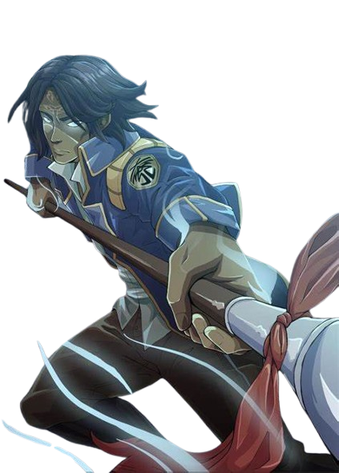

La saga Stormlight Archive es la obra más ambiciosa y épica de Brandon Sanderson dentro del Cosmere. Ambientada en Roshar, un mundo azotado por tormentas devastadoras, la historia explora conflictos políticos, batallas monumentales y el renacimiento de los Surgebinders, individuos que poseen habilidades mágicas ligadas a las fuerzas fundamentales de su mundo. Con un enfoque en personajes complejos como Kaladin, Shallan y Dalinar, esta saga no solo ofrece acción trepidante, sino también profundas reflexiones sobre la identidad, el liderazgo, el trauma y la redención. Cada libro amplía el horizonte de un mundo rico en detalles, donde los misterios del pasado se entrelazan con el destino de sus habitantes.